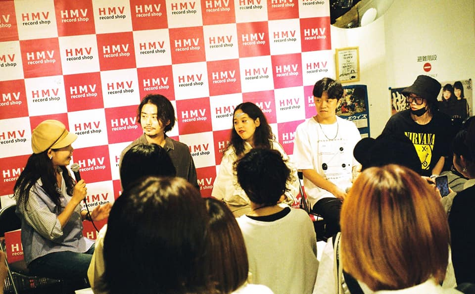

Adoy?
보컬 주환의 반려묘 요다(YODA)의 이름에서 따왔다.
요다의 이름을 거꾸로 뒤집은 것인데, 사실 특별한 의미는 없고 부르고 쉬워서 밴드명으로 지었다
아도이는 신디사이저를 중심으로 하는 장르인 신스팝을 기반으로 하는 밴드다. 아도이 음악이 연상하는 건 무척 단순하고 직관적이다.
여름, 바다, 파도, 서핑, 공원, 달리기, 밤공기, 맥주, 담배, 수다처럼 잠시 떠올리는 것만으로도 기분 좋아지는 것들. 거기에 여행, 꿈, 미래,
실수, 외로움 같은 조금 복잡한 이야기를 가진 감정이 더해진다 우리는 각자 다른 록 음악을 하던 4명이 모여 신스팝을 하는 밴드다.
영화 사운드 트랙처럼 우리 음악이 대중의 삶에 아름다운 OST가 됐으면 하는 바람이다.
Q&A

우리에게는 이미 지나가버린 시간이라고 생각하지만 되돌아보면 한없이 즐겁고, 허둥대며 살아왔던 시간들인 것 같습니다.
저희는 그래도 아직 젊기에, 더 많은 젊은 분들이 저희는 많은 이들이 공감하고 쉽게 부를 수 있길 바랍니다.
그 안에서 저희가 할 수 있는 걸 최대로 끌어내기 위해 노력합니다
영어 가사는 특별한 이유라기보다는, 지금까지 발매된 곡에 '더 잘 어울려서' 입니다.
가장 많이 쓰는 언어이기도하고요.
이 후에 한글이 더 잘 어울리는 곡이 나오면 한글로도 작업해볼 수 있지 않을까요.
보통 신디 소리를 만지면서 놀다가, 마음에 드는 소리를 발견하면 거기서부터 곡에 대한 생각이 떠오르는 편입니다.
곡에서 어떠 한 감정을 전달하고 싶은지 결정이 되면, 그 감정에 연관된 사진이나 영상을 한 켠에 띄워놓고 작업을 많이 합니다.
'커머셜'한 음악을 하되, 우리만의 음악적 색깔을 잊어버리지는 말자는 의미에서 사용하게 되었어요.
그리고 '인디'가 '커머셜 하지 않은'것으로 자주 분류되는 것이 싫어서 두 단어를 합쳐버린 것도 있고요
Connan Mockasin을 좋아해요. 그의 음악과 그의 뚜렷한 개성, 특히 라이브에서 힘을 빼고 편안하게 즐기는 모습에서 긍정적인 영향을 많이 받고 있습니다.
그리고 David Bowie를 좋아합니다. 항상 도전적이었고, 변화를 두려워하지 않고 언제나 음악에 열정적이던 그 모습을 존경합니다.
일단은 저희의 음악을 들어주시고 공연에 와 주시는 소중한 분들에게 할 수 있는 건 뭐든지 다 해드리자라는 마음이에요.
SNS를 통한 피드들도 그 중에 하나라고 생각합니다.
가장 직접적이고, 빠른 채널이라고 생각해서요
계획 중인 다른 소통방식이라면, 저희만의 유튜브 채널을 만들고 활성화시킬 예정입니다